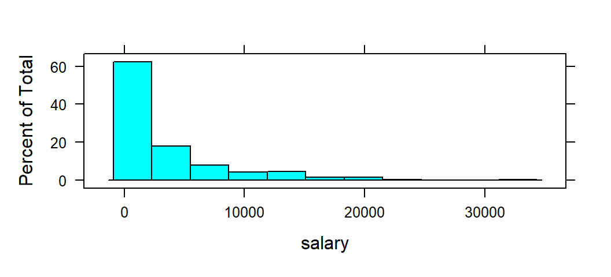
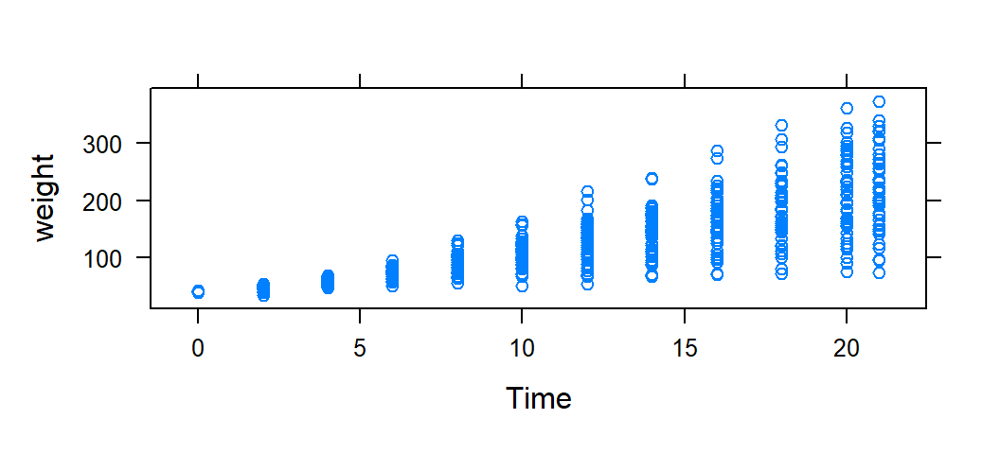
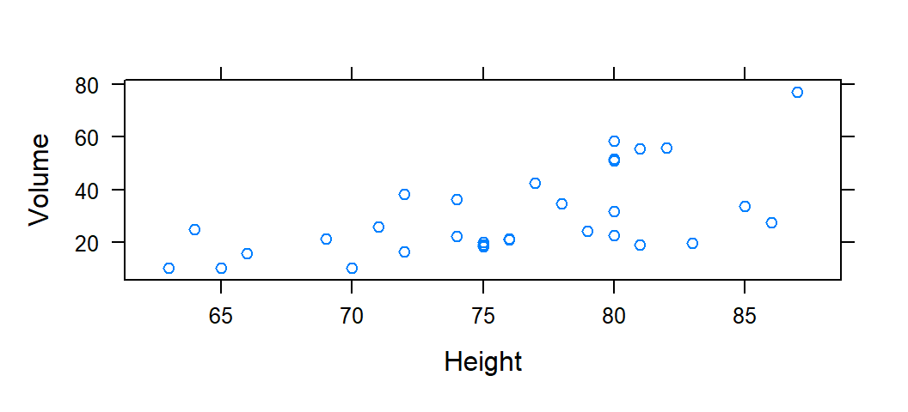

Code
mlbDataImport = read.csv( "http://www.csub.edu/~emontoya2/datasets/mlb2010.csv" )These section covers importing data into R and some basic R functions.
For importing data, it is assumed the data are stored in a .csv file as described in Section 7.3. To import .csv files, the function read.csv() is used and this function comes with R. Note that if your data are stored in an excel sheet (.xlsx), the function read.csv() can be replaced with read.xlsx. This functions is from the openxlsx package. If your excel sheet is a .xls file, convert it using excel to .xlsx. Installation of R packages are discussed later in this section.
Importing data here will be illustrated using the “MLB salaries (2010)” data set. This .csv file of this dataset is located at the following URL: http://www.csub.edu/~emontoya2/datasets/mlb2010.csv.
This approach only works if the .csv has a url location. The “MLB salaries (2010)” data set is located at the following URL:
Link: http://www.csub.edu/~emontoya2/datasets/mlb2010.csv
To import, run
mlbDataImport = read.csv( "http://www.csub.edu/~emontoya2/datasets/mlb2010.csv" )Note that read.csv() reads in the data into R and we are assigning the resulting data set to an object called mlbDataImport. Since this object consist of the dataset, such objects are called a data frame. A data frame is the most common way of storing data in R. For our purpose, the term dataframe and data set will be used interchangeably. Note that the mlbDataImport data frame should now appear under the “Environment tab”.
Further note that read.csv() only requires the location of the file or file path (assuming the data was stored as discussed in Section 7.3). Since the data is located at this URL, we use the URL. If the data is saved on your computer, then replace the url with the file path or with file.choose().
The URL must be in quotations and NO spaces at the start after the quotation or right before the end of the quotation. For example, you will get an error if you use the following urls
" http://www.csub.edu/~emontoya2/datasets/mlb2010.csv"
"http://www.csub.edu/~emontoya2/datasets/mlb2010.csv "
" http://www.csub.edu/~emontoya2/datasets/mlb2010.csv "
They look similar to what we used but it has spaces within the quotation marks!
An R function called summary() can provide the names of the variables and other information by using :
summary( mlbDataImport )
#> player team position salary
#> Length:828 Length:828 Length:828 Min. : 400.0
#> Class :character Class :character Class :character 1st Qu.: 418.3
#> Mode :character Mode :character Mode :character Median : 1093.8
#> Mean : 3281.8
#> 3rd Qu.: 4250.0
#> Max. :33000.0Note that this data frame has four variables but that R treats the categorical variables as character variables. By default, R treats any categorical variables with categories labeled by letters or words as character variables. If the categories are instead labeled with numbers, R considers the categorical variable to be a numerical variable. Instructions on how to tell R to treat categorical variables as categorical and not numerical/character will be covered later.
Download the .csv file below onto your computer. Make sure to note where the file is saved. Depending on the browser settings, after clicking on the link below, the file will either open in the browser and it will be downloaded.
http://www.csub.edu/~emontoya2/datasets/sampledata.csv
After saving this .csv file, one can take a “point and click” approach to importing data. Like most software, RStudio has a toolbar where you can access many commands. To import data using the toolbar menu, select File>Import Dataset> From Text (base). Then select your .csv file. If your data are stored in an excel spreadsheet (.xlsx) in tidy form, then select “From Excel”.
Alternatively, if you know the file path for the spreadsheet, you can run following
# by putting in "file.choose()", this tells R that you want to browse for and select the csv file
ImportFromDrive = read.csv( file.choose() )This automatically opens a window that allows you to browse for your .csv file. Select your file and click on Open.
The data set ImportFromDrive should appear in the Environment tab in the upper right panel where it displays the number of observations and variables. One may also replace file.choose() with the location of the file in quotation marks.
R functions are either ready use when you start a new RStudio session or an R package must be loaded to use a function from that package. The syntax of an R function consist of the function name followed by parentheses that contain argument(s). The R functions used in this resource will generally consists of the name of the data frame that is in tidy form and one or more of the following arguments:
Names of response variable as spelled in the data frame
Names of explanatory variable(s) as spelled in the data frame
additional optional arguments
R has many built-in function or function that become available once a library is loaded. For example, the mean( ) function computes the mean of sample of data.
Exploring data using graphical and numerical summary statistics will be discussed in ?sec-summaries. For now, a brief introduction to graphing and computing summary statistics is provided. When wanting to summarize a single variable, functions to create graphical and numerical summaries follows the general form task( ~ x , data) where x is the variable you want to graph or compute a statistic of. Depending on the summary, we may have to specify some additional things. If the variable x is a variable in the data frame, then data would be set equal to the name of the data frame. The names used for x and the name of the data frame must be the names that R has given the data set and variable. task would be replaced with the name of the function. For bivariate, the form becomes task( y ~ x , data) becomes where y represent the dependent variable and x is the explanatory variable. Most R tasks covered in the modules will follow this general form. The expressions y~x or ~x are called formulas in R.
Recall that we imported the MLB dataset and we stored it in a data frame called mlbDataImport. Here, the task is to create a histogram of salary. salary represents the salary (in $1000s) of a given baseball player in 2010. Again, the basic formula is task( ~ x , data) where task would be replaced with the name of the function to create the desired graph. RStudio refers to histograms as histogram. The variable of interest is salary and it would replace x. The argument data is set equal to mlbDataImport.

To compute the mean salary of these baseball players we replace task with mean. As with the histogram, x is replace with the name of the variable salary, and data is set equal to mlbDataImport:
Suppose you wanted to compute the average salary for each position. To so, we can tell RStudio to compute the mean by levels/groups of a grouping variable. A grouping variable groups data into categories or groups. Grouping variables are categorical variables. When summaries are computed based on the levels or groups of the grouping variables, they are called side-by-side or comparative summaries.
To summarize the data conditional on a value of categorical variable, the general formula becomes task( ~ x | gfactor , data) or task( y ~ x | gfactor , data), where gfactor represent the categorical variable, typically called the grouping variable. Here, the task is to compute the mean salary for each potion, so the grouping variable is position:
mean( ~ salary | position , data= mlbDataImport )
#> Catcher Designated Hitter First Baseman Infielder
#> 1937.220 5235.714 5826.521 770.575
#> Outfielder Pitcher Second Baseman Shortstop
#> 3753.926 2999.197 3022.723 2844.146
#> Third Baseman
#> 4641.286Note that the names of the variables (e.g., salary, position, etc.) are spelled exactly as they appear in the data frame.
Functions in R will have a number of arguments. An argument is piece of information that is provided to the function in order to execute the requested task, such a compute a summary statistic or create a graph. From hereinafter, functions used in the modules will describe the function in the following ways:
Some arguments will be required, others optional depending on the function. More often than not, the functions will require at least the following arguments to run: A formula (such as y~x or ~x) and the name of the data frame (data=‘name of data frame’). The phrase task will be replaced with the name of the function, such as mean or histogram.
In some sense, you can use the code provided in this resource as a template to adapt to your dataframe and the names of the variables within your dataframe (discussed in the next section).
All functions used in the module will only be described when they are first used. Any subsequent uses of a given function will not provided a description but the reader may search for the name of the function in the search bar provided in the upper left of the module.
In this section, we demonstrate how to adapt the provided code to your own data frame and variables of interest by using formula expressions with examples from two different datasets. Recall that most functions will have a layout of task( y ~ x , data) or task( y ~ x , data). For this illustration, we use two dataframes, ChickWeight and trees dataframe. Both of these dataframes are built-in with R. Note the following variable names in each dataframe:
# "ChickWeight" measurements on weight, time since birth,
# age, and diet plan of chicks
names( ChickWeight )
#> [1] "weight" "Time" "Chick" "Diet"
# "trees" dataset contains the height, girth,
# and volume measurements for 31 trees
names( trees ) # this dataset comes built-in with R
#> [1] "Girth" "Height" "Volume"The following computes the weight of the chicks:
# Compute the mean weight
mean( ~ weight , data= ChickWeight )
#> [1] 121.8183Note that weight is spelled weight and not Weight or WEIGHT since it appears as weight in the dataframe.
The code below computes the mean volume of the 31 trees:
# Compute the mean
mean( ~ Volume , data= trees )
#> [1] 30.17097Notice the similarity between these two commands. The only differences are the names of the data frames and the variable names (spelled exactly as they appear in the respective data frames, keeping in mind that R is case sensitive). The general form used here is: task( ~ x, data )
The following creates a scatterplot of the weight of a chick against the time since birth:

The code below plots the volume of a tree against height of a tree:
# create the scatterplot
xyplot( Volume ~ Height , data= trees )
Notice the similarity between these two commands. The only differences are the names of the data frames and the variable names (spelled exactly as they appear in the respective data frames, keeping in mind that R is case sensitive). The general form used here is: task( y ~ x, data )
There are 3 methods for exporting a plot in R. After creating a plot, go to the Plots tab in the lower right pane. Find the “Export” button located in the upper right corner of the plot tab. Click on the “Export” button and three options will be given:
“Save Plot as Image”: This option allows you to save the plot as an image file (such as png or jpg). Click on this option, and a box will open where you can choose the file format, resolution, and dimensions for the exported image. After selecting the options, click “Save” to save the image file to your computer.
“Save Plot as PDF”: This option allows you to save the plot as a PDF file. Click on this option, and a box will open where you can choose the file name, dimensions, and other options for the exported PDF. After adjusting the settings, click “Save” to save the PDF file to your computer.
“Copy Plot to Clipboard”: This option allows you to copy the plot to your clipboard. You can then paste the plot directly into other applications (such as Word, PowerPoint, etc.)as an image.
Sometimes, this resource will require the usage of what may be called custom functions. Some of these custom functions are wrappers1 for R functions that come with R, while others are entirely new functions that were created. The reason for creating these custom functions is to provide a more consistent and streamlined way to perform certain tasks.
Any time custom functions are used, they must first be sourced. For example, suppose a function called my_function() is provided by the file my_functions.R, and that this file is located in the following file path or location: C:/Users/YourName/Documents/my_functions.R. This function is saved in the “Documents” folder. If the code below is executed, it would source the file my_function.R so that the R my_function() function is in R’s memory:
source("C:/Users/YourName/Documents/my_functions.R")Note that any time you start a new RStudio session, you would need to source the my_functions.R file again in order to use the my_function() function. This is because R does not automatically remember custom functions that were sourced in previous sessions.
To use the custom functions provided in this resource, you will need to download them from the repository and update the file path in the source() function to reflect the location where you saved the functions on your own system.
A wrapper function is a function that calls another function or a set of functions to simplify or extend tasks.↩︎